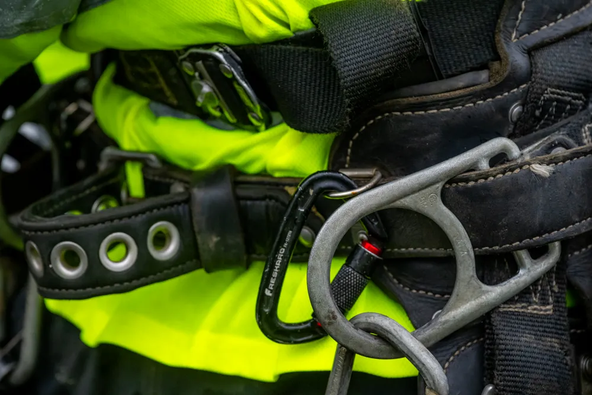
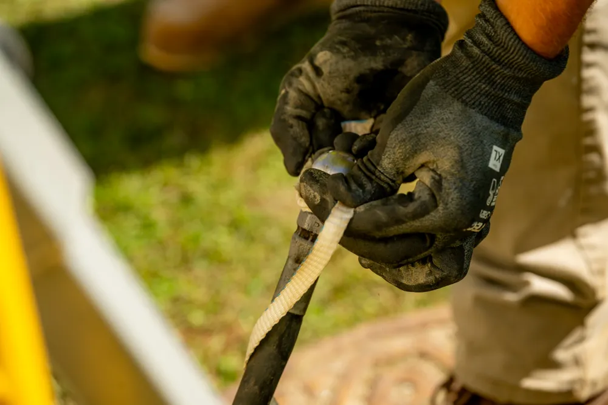

Headway® safety
Headway® is Dycom's safety management system. It puts a safety assessment ahead of every task, trains and mentors every crew, and gives everyone on site the authority to stop the work.
Anyone on a Dycom job site can stop the work if it is not safe, without reprisal.
Safety before schedule
Every Dycom company works to Headway®, one safety management system for crews in all fifty states.
Our work happens beside live roads, overhead lines and buried utilities. Headway® makes safety part of how each job is planned and run, not a step added at the end. It rests on four commitments that every crew, supervisor and subcontractor shares.
- Assess before work starts. Every task is reviewed for its hazards before anyone begins.
- Train and mentor. Experienced people pass on safe ways of working in the field.
- Recognize hazards. Crews know what to look for and how to resolve it.
- Stop the work. Anyone can stop a job they believe is unsafe.
Before work starts
A job-task safety assessment comes before every task. The crew walks through the work together, so everyone knows the plan before the first tool comes off the truck.
- 1Review the task
What the crew will do, where, and with which equipment.
- 2Identify the hazards
Traffic, height, buried utilities, weather and the public.
- 3Put controls in place
The protection, people and permits each hazard needs.
- 4Confirm with the crew
Everyone agrees the plan, and the plan changes when the site does.
Training and mentoring

Safe habits are learned on the job. New team members train alongside experienced crew members who show them how the work is done safely, step by step, before they do it on their own.
Training continues as people move into new trades and new roles, so the standard travels with them.
Life & developmentHazard recognition
Our hazard recognition and resolution guide helps every crew member spot hazards and know how to resolve them. It is published in English and Spanish.
Stop-work authority
If it is not safe, stop the work. No one at Dycom is penalized for stopping a job they believe is unsafe.Headway® stop-work authority
Safety resources
For field employees
The guides and policies that apply on every job site, and where to find them.
For supervisors and crew leads
Leading the job-task safety assessment with your crew, and keeping quality and safety in the same plan.
For suppliers and subcontractors
Suppliers and subcontractors on our sites work to the same safety standard as our own crews.
For communities near our work
Planning to dig? Call 811 first, so buried utilities can be located and marked before anyone breaks ground.


Do skilled work. Go home safe.
Our operating companies are hiring across the trades, with training and mentoring from the first day.